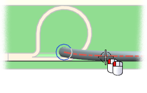
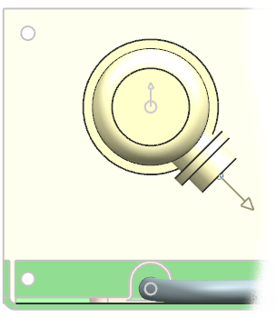

Double–click the routing segment.

Notice that a Space Reservation group now appears in the Spline Path dialog box.
In the Space Reservation group, in the Diameter box, type 12 and 点击确定。
The centerline of the segment raises off of the base of the drawer in order maintain the Stock Offset Expression distance.

Close all parts without saving.